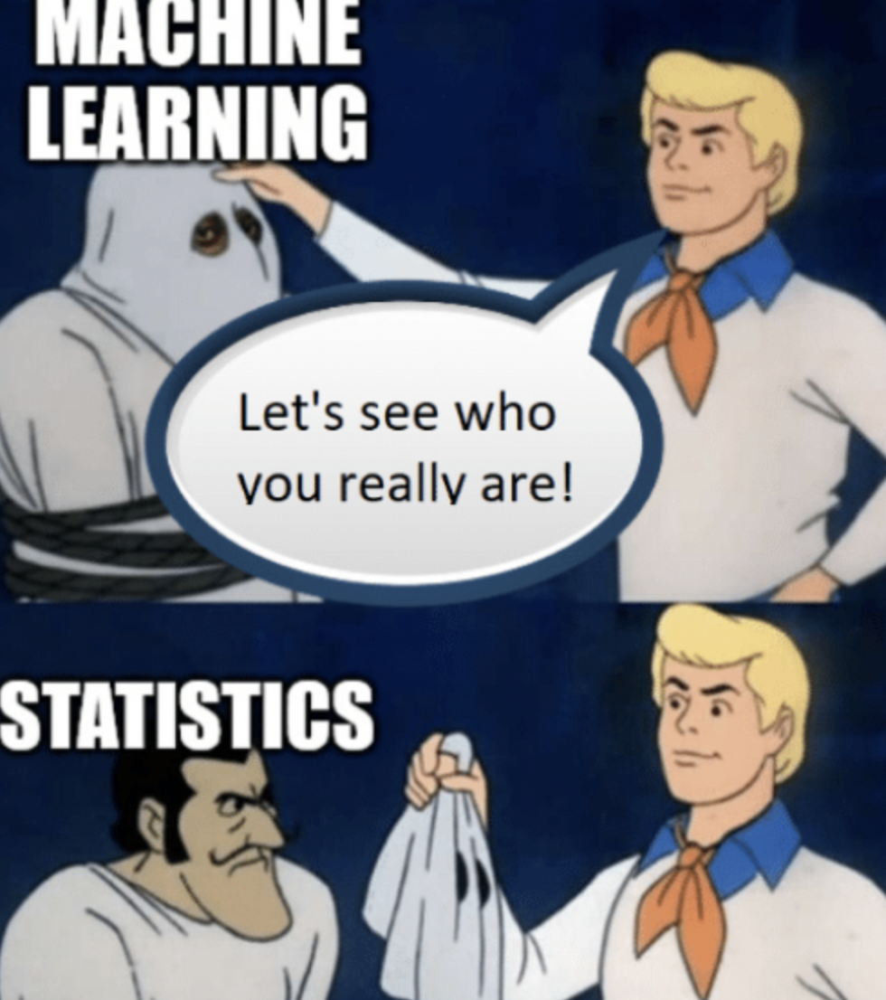

Make a meme
"If you think that AI has consciousness, you might give it the care, play, and love you extend to a pet. Or, if you think it is a toaster, then you will give it a steady supply of electricity, buy toastable foods and want toaster engineers to write safe production and use standards. " -- Maya Ganesh, Between metaphor and meaning: AI and being human.Read:
- wahkohtawin: kinship within and beyond the immediate family, the state of being related to others (from Making Kin with the Machines) Make sure you are reading the right section*
Step 1:
Write down a metaphor for Machine Learning. If you get stuck, I suggest specifying your context. For example, you could write metaphors specifically for Chat-GPT or Dall-E, or you could picture a hypothetical model that you would make. Think about how your metaphor illustrates the ways you relate to this model. ( Note: Please don’t generate this metaphor using AI. )
Examples:- ChatGPT Is a Blurry JPEG of the Web (from this article)
- AI is a child
- AI is an oracle
- AI is an assistant
Step 2:
Create a meme or illustration using your metaphor as a jumping-off point. (Please don’t generate this illustration/meme using AI.)
examples: Instructions for submission:
- Submit your meme and metaphor in the #assignments channel of discord.